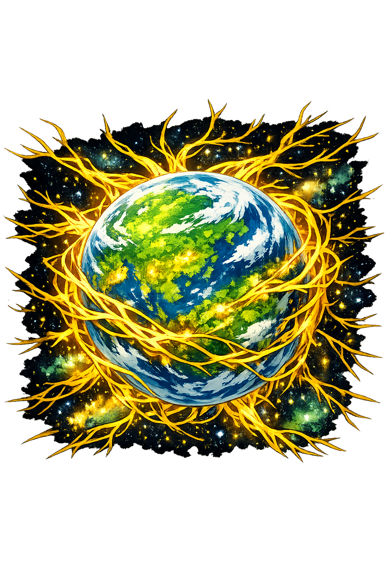

The Authentic Orthography
Earth, Mother of All · Primordial Goddess of the Living World
Why Gaîa is the correct form
Γαῖα
The name in its original Attic Greek form. The circumflex on the iota marks a long vowel, a feature essential to the correct metrical and phonological reading of the name. In epic poetry, the length of the ? determines the scansion of entire hexameter lines. This is not a modern embellishment — it is the authentic orthography as transmitted through the manuscript tradition of Hesiod and the Homeric hymns.
GAIA
Stripped of its Greek identity, the name was reduced to four Latin letters. Corporations claimed it. Space agencies borrowed it. The primordial goddess was buried beneath satellite missions, health food brands, and software frameworks. The circumflex — the mark of her authentic length — was erased. What remains is a hollow shell, unpronounceable to the muses.
Gaîa
The circumflex on the iota restores the long vowel and the dignity of the name. This is not decoration — it is philological accuracy. The Greek original contains both stress and length, making this the full scholarly orthography. The domain encodes to Punycode, but the browser displays the truth.
gaîa.com → xn--gaa-wma.com
The non-ASCII character î (U+00EE) is encoded while the ASCII remains visible. To the DNS, it is Punycode. To humanity, it is Gaîa.
Where gaîa stands in the PUNYCODEX elegant tier system
gaîa preserves the circumflex on the î. The circumflex encodes both stress and length in a single character, but under the elegant system, it does not constitute a dual-mark because it is a single sign. Gaia is Tier 2 — single-mark Greek.
This is not a deficiency. In Liddell-Scott-Jones, Cambridge, and Oxford editions, single-mark is the standard convention. The stress and length combined is preserved even when the stress is not. The circumflex on the î encodes both stress and length in a single sign — a philological elegance that macron+acute cannot match. Gaia is not a compromise. It is a convergence.
How the Earth Mother was truly spoken
Domains, symbols, and divine authority
Gaîa is not merely a goddess. She is the earth itself — the first thing that emerged from Chaos, the solid foundation upon which all subsequent creation rests. She is the mother of the Titans, the Olympians, the Giants, and every creature that walks, crawls, or takes root in the soil. Before there were gods, there was Gaîa. Before there was sky, there was Gaîa. She is the oldest of the old, the ground beneath all myth.
Not merely soil or stone — the entire terrestrial sphere, the ground that holds the seas, the mountains, the cities, and the graves. Gaîa is the world.
The archetypal mother — not through marriage but through spontaneous generation. She bears children from herself, from her union with Ouranos, and from her rage.
The Ourea — the mountains — were born directly from Gaîa, without father. They are her bones pushed through her skin, eternal and unmoving.
Before Apollo, the oracle at Delphi belonged to Gaîa. The Pythia sat above the chasm and spoke the Earth's own prophecies — primal, truthful, and terrible.
Stories that shaped the cosmos
In the beginning, Hesiod tells us, there was Chaos — the yawning void. And then, somehow, impossibly, Gaîa arose — broad-bosomed Earth, the ever-sure foundation of all. She was the first solid thing, the first boundary, the first home. From her came the starry Ouranos — the sky — who covered her on every side. And she bore the long mountains and the sea — Pontos — all without coupling, simply by being herself. The earth generates. That is her nature.
Gaîa lay with Ouranos, her son and her equal, and bore the Twelve Titans — Kronos, Rhea, Koios, Phoibê, and their siblings. She bore the Cyclopes — Brontês, Steropês, Argês — each with a single eye in the center of their foreheads. And she bore the Hecatoncheires — Kottos, Briareos, Gyes — each with a hundred arms and fifty heads. But Ouranos hated his children. He pushed them back into Gaîa's womb, refusing them the light. Gaîa groaned within, crushed by her lover, her children imprisoned in her own body. She made a great sickle of grey adamant and called her children to avenge her. Only Kronos, the youngest and the boldest, had the courage.
Kronos lay in wait while Ouranos descended to cover Gaîa. When the sky pressed close, Kronos struck — he severed his father's genitals with the adamantine sickle and cast them into the sea. From the blood that fell on Gaîa, she bore the Erinyes — the Furies — and the Gigantes — the Giants. From the foam that gathered around the severed flesh in the sea, Aphrodite was born. Ouranos withdrew, wounded and shamed, and the Titans ruled in his place. But Gaîa had merely traded one tyrant for another.
Kronos swallowed his own children, just as Ouranos had swallowed his. But Rhea, with Gaîa's counsel, saved Zeús by hiding him in a Cretan cave. When Zeús grew, he freed his siblings and waged war against the Titans. Gaîa, now against her own children, prophesied that the Olympians could only win if they freed the Hecatoncheires — the hundred-handers she had borne long ago. Zeús did so. With the Hecatoncheires hurling three hundred rocks at once, the Titans were overwhelmed and cast into Tartaros. Gaîa bore the victors and then armed the losers. She is mother to both sides of every war.
When the Olympians were secure, Gaîa turned against them. She coupled with Tartaros and bore the Giants — great beings armored in stone and mountain, born to destroy the new gods. The Gigantomachy shook the world. The gods needed a mortal hero to tip the balance: Herakles. With his arrows and the gods' thunderbolts, the Giants were struck down and buried under volcanoes — Etna, Vesuvius, every mountain that smokes is a Giant imprisoned beneath. Gaîa, undefeated, simply waited. She has always been patient. She is the earth. She has nowhere else to go.
Her last great child with Tartaros was Typhon — a being of such monstrous size that his head brushed the stars, his arms were coils of serpents, and fire flashed from his eyes. He challenged Zeús directly. The battle shattered mountains and boiled seas. Zeús finally prevailed, hurling Typhon into Tartaros or, in some accounts, beneath Mount Etna, where his struggles cause earthquakes and volcanic eruptions. Even in defeat, Gaîa's children reshape the world.
Related entries from the Greek primordial order
The single valid form of the Earth Mother
Gaîa
The full scholarly orthography with circumflex on the iota, marking a long vowel. This is the form attested in Hesiod's Theogony and the Homeric hymns. It is the only historically valid Unicode restoration.
Gaia
The stripped ASCII form, lacking the circumflex that marks vowel length. While phonetically recognizable, it sacrifices the metrical and tonal information encoded in the original Greek. This is the modern English approximation, not the ancient canonical form.
Gaîa is classified as Tier-1 Macron-Preserving because the Greek original contains both stress (the acute/circumflex) and length (the long iota), but there is only one historically valid Unicode restoration. Unlike the dual-tier names — Ápollon, Hádes, Hekáte, Níke — Gaîa has no alternate stress positions or dialectal variants that would produce a distinct, equally valid spelling. The circumflex on the iota is the sole marker of the name's authentic phonological structure.
Gaîa is the first. The earth that anchors the entire network. Before gods, before titans, before monsters — there was the broad-bosomed Earth. But she is not alone. Across the encoded web, the authentic names of the Greek and Norse pantheons have been restored — each with its own domain, its own lore, its own truth.
This is not a directory. This is a resurrection.
Enter the Codex
See how Gaia behaves in the PUNYCODEX Type Tool — with predictive autocomplete, character-by-character breakdown, and scholarly constraint validation.
gaia
→
Gaîa